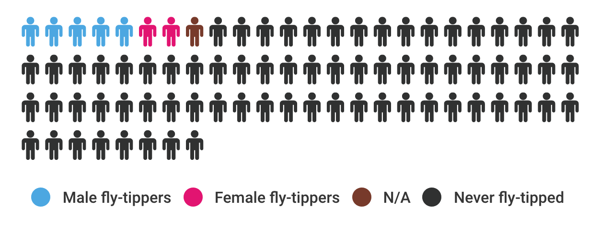

Fly-tipping is the common term used to describe waste illegally deposited on land.

Copiright @ Buckinghamshire Enforcement team
Copiright @ Buckinghamshire Enforcement team
Despite the good progress made by local authorities, 32,000 were the incidents recorded in Wales in 2014 - 2015. Moreover, Fly-capture only records incidents that occur on public land, therefore the true scale of fly-tipping is likely to be bigger.
Fly-tipping is a crime. Its offence is set out in the Environmental Protection Act 1990. Being the punishment of offenders not always a deterrent to commit the offence, new guidelines on sentencing for environmental offences were issued in 2014. The intent is to make committing an offense more expensive than to take the appropriate precautions.
Fines need to reflect the true cost of fly-tipping on society, and they go until a maximum of £50,000 and/or 12 months imprisonment.
Fly-tipping is not confined to geographical boundaries, is more than a national problems, and this is why Wales, Scotland and England work together to tackle the problem.
Ryondda Cyhon Taff leads the way, followed respectively by Swansea, Cardiff and Caephilly, which is not surprising considering they contain high populated towns.
However, if we think there is a merely correlation between the numbers of accidents and the population density, we are wrong. In fact, data show high figures for Northern local authorities such as Isle of Anglesey and Denbighsire, which ranks low on the density table.
Furthermore, looking at the map, what strikes the most are the figures for localities like Wrexham, Monmouthshire and Ceredigion. In fact, summing together their values, they don't even account for 0,1% of the flytipping rates in Wales.
We can conclude that Fly-tipping varies across Wales, and depends in part by the resources invested by local authorities. A formula to locate fly-tipping is: "more waste, less distance.It's all about how much waste there is, that could be dumped, and how far you are from that.
Mostly due to a shift in Cardiff's figures. In fact, even if it comes in third place, saw his figures halved in the last year and markedly fell by 82% over an eight-year period. Same trend applies for Vale of Glamorgan, but data dip by a factor of three.
However, out of all 22 local authorities, only a dozen of them tended to decrease over time.
At the top, we find Swansea and Ryondda Cynon Taff, whose numbers gradually rose over the last four years.
Some local authorities like Flintshire, Powis and Bridgend saw a strong fluctuation, to later come back to approximately the same figures as 2006.
Upward trend for Isle of Anglesey and Denbighshire in the North, and Blaenau Gwent in the South. An interesting the case is the one of Newport whose number has significantly grown and is currently 14 times bigger than in 2006.
However, if the number of black bags has been halved from 2009, the same cannot be said for "other household". This should not surprise - just think of the rise in the incidents recorded over last Christmas. People replace furnitures, toys, clothes with new gifts and dump the rest in the streets.
Other commonly tipped wastes include construction and demolition waste, white goods and green waste.
A report by the London-wide Initiative on Fly-tipping identified four groups of fly-tippers:
Nevertheless, the main perpetrators of this environmental crime remain irresponsible residents and commercial fly-tippers (someone who has been paid to remove it).
It affects council tax budget and uses money that could have better been spent elsewhere. The scatterplot reveals a markedly decrease in the number for Cardiff, while the general trend for the other local authorities has oscillated.
Two additional economical impacts there are overlooked:
Fly-tipping costs around £105 in landfill tax and gate fees to dispose of one tonne waste.
Fly-tipping hotspots are also subject to arson attacks because of the large amount of tyres and gas bottles. This costs in average £1,970 per call out for the Fire and Rescue Services.
Case study: £632,000 of funding were secured for The Valleys Regional Park project with the aims to reduce fly-tipping, increase tourism and raise the profile of the South Waste Valleys as a visitor destination.
Data source: Survey
We conducted a survey to understand attitudes towards fly-tipping and to find correlations. A total of 70 people (35 males and 35 females), with different backgrounds, age groups, and education participated.
"It's a selfish thing to do because everyone else ends up paying for the clean up through taxes."
"Appalling. Illegal. Bad for environment."
"Should carry custodial sentence"
"It's incredibly antisocial and disrespectful."
The main reason why people fly-tip seems to be laziness.
"We provide excellent facilities that could be used. But there are people who have to pay and are reluctant to pay." (D. Rounding)

of which:
3 do not care about the environment,
4 do not like out-door activities,
5 do not recycle,
6 think waste collection are too expensive,
7 do litter.
Fly-tippers justified their action pointing at the lack in the rubbish collection service and the council ineffective waste policies. Some of them think that it can be useful when objects are re-usable, because you can take and give away stuff that way.
Also according to David Rounding, we should be skeptical about the numbers we find on Fly-capture.
“We do not view things as fly-tipping, which they do in other places. I can't tell you what the exact difference is, but people don’t record it in the same way. For example if you look at Northhumpton if has far more than we have. But that's because they classify differently."
Many councils score as fly-tippers people who leave stuff outside their property hoping that someone who will take it. That's why you get such high numbers.
"I wouldn't call fly-tipping the action of someone leaving something outside their property, that's a sanction 46 and I've never prosecuted it. But if they drive it down the road and chuck it on the verge or somebody else property, then it's a sanction 46 and that's fly-tipping."
Prosecutions figures are very different depending on which councils. If you look at the flycapture data on prosecutions, a large numbers of those are not for prosecution flytipping, people recorde them as such. I suspect the councils with the biggest prosecutions numbers. We convinct in average of one a week, anybody who convict more than 60 prosecutions per year, they are either moving mountains or they are (11:15). We are very robust prosecutive authority and we get to be one in 25 that we convict. Some councils classify things like someone who puts a bag of waste beside their bin on a collection day like fly-tipping.
Consequences? Correlation?
(Solutions1) The Enforcement team investigate fly-tipping: they analyse data, examine waste to see we can find where it come from, I do speak with witnesses who see people dumping waste, and I do hide cameras to catch people dumping illegally. To find hotspots is really useful. The enforcement makes a big difference. Their hidden cameras could be set to record videos, but they are not because they get a much better resoltuions with images.
Fly-map
"We have shown that Enforcement can work, we have less dumping than we did and we have saved lots of money because of that."